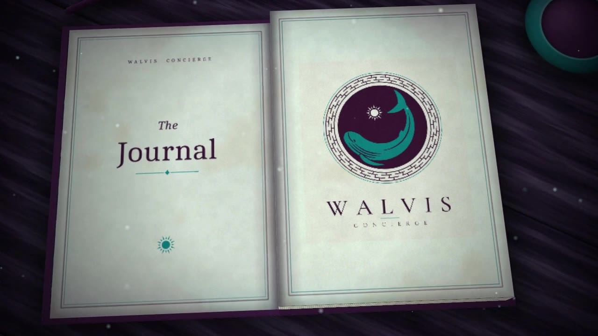

Stories, guides and small discoveries.
Notes from our team on travel, gifting, celebrations and the Bangladesh we love. Written for members, and for anyone curious.

Journal
In this issue: six short reads, from Eid gifts to a slow morning in Old Dhaka.
I
Personal Lifestyle
The art of the Eid gift
Choosing something that feels personal, not just expensive.
Read
The best Eid gifts are rarely the most expensive ones. They are the ones that show you were paying attention: the attar your uncle mentioned once, the sweets from the shop your mother grew up near, the book a friend has been meaning to read.
We start with a short list of names and a few words about each person. Then we find two or three ideas for every name, wrap them properly, and send them out on the right morning with a card in your words.
A small tip from our side: decide the list a week before Chaand Raat. The good mishti shops and florists are busiest exactly when you need them.
Ask us about this
II
Bangladesh
Old Dhaka, slowly
A morning between the palaces, the river and a long lunch.
Read
Old Dhaka rewards anyone who arrives early. Before the traffic wakes up, Ahsan Manzil glows pink by the Buriganga and Lalbagh Fort is quiet enough to hear the birds.
We like to go on foot where we can, with someone who knows the stories behind the doorways, then take a small boat on the river before lunch. The Star Mosque is best seen in the softer light of late morning.
It is a day for comfortable shoes, an empty afternoon and an appetite. Tell us how much walking feels right and we will shape the route around it.
Ask us about this
III
Experiences
Planning a surprise that stays a surprise
Proposals, birthdays and anniversaries, kept quiet until the moment.
Read
The hardest part of a surprise is not the flowers or the table. It is keeping it secret. So we keep the conversation with one person only, and every message is written so it gives nothing away if someone else picks up the phone.
We plan a cover story with you, a back-up for the weather, and someone on the ground on the day so you can simply arrive and enjoy it.
Our favourite surprises are small and personal: a song that matters, a view from the first trip, a note in the right handwriting.
Ask us about this
IV
Travel
What to ask before booking a villa
Five questions that save a holiday.
Read
Photographs are generous. Before we recommend a villa, we ask what the pictures do not show: how far the beach really is, whether the pool is heated, who cooks, and what is being built next door.
We also ask about the people: is there a house manager, who answers at night, and how quickly can a doctor arrive. For families with grandparents or little ones, the stairs and the bathrooms matter more than the view.
None of this is glamorous, which is exactly why we do it for you. You should only have to choose between places that already work.
Ask us about this
V
Probashi Concierge
Coming home for a family wedding
A gentle checklist for Bangladeshis flying in from abroad.
Read
A wedding at home is a joy and a project. Outfits to tailor in time, gifts for both families, a car for every function and somewhere comfortable to stay when the house is full.
We like to start six to eight weeks out: measurements sent ahead, fittings booked for the first days after landing, and a simple plan of which car goes where on each evening.
Then, once you land, the only thing left to arrange is your time with family. That is the part we cannot do for you, and should not.
Ask us about this
VI
How we work
Why we always send options first
Two or three good choices, never a decision made for you.
Read
Every request starts with a short conversation and ends with options: usually two or three, each one we would be happy to book ourselves.
Nothing is bought or booked until you say yes. It is slower by a few minutes and calmer by a mile, and it means there are no surprises you did not ask for.
If something cannot be done, we say so early and suggest the next best thing. That honesty is part of the service too.
Ask us about thisA story you would like us to write?
Tell us what you are curious about. The best ideas for The Journal come from our members.